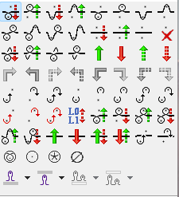
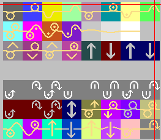

A grelha em baixo imita o ecrã de desenho: cada célula com cor de função (como no M1plus) e traçado do fio em tan.
Transferências usam setas cinzas sólidas ↑ / ↓ como na sua captura. Caracteres K T M < > . são só atalhos no HTML.
Letras: stoll-manual-symbols.html.
Paleta de símbolos

assets/m1plus-paleta-referencia.png
Símbolos na grelha de criação de pontos

assets/m1plus-grelha-simbolos-exemplo.png — captura que enviou (como ficam os ícones no desenho).